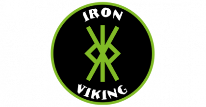
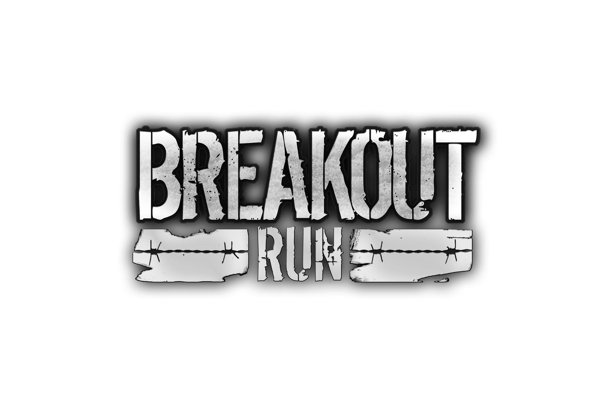

Welkom bij Bobstacle
Iedereen kan een obstacle run lopen, op deze site vind u informatie en praktische tips.
Zou het niet leuk zijn als je een obstacle run, survival run, trailrun of een andere buiten sport zou kunnen beoefenen? Dat vergt niet alleen veel oefening, maar het is ook belangrijk dat je daarbij de juiste hulp en ondersteuning krijgt. Op deze site, kunnen we jou tips en tools geven. We hebben jaren lange ervaring in het lopen van obstacle runs en survival runs.
Het is allemaal lang geleden begonnen bij Defensie, waar we door Chris van bureau sport uitgedaagd werden om te gaan trainen voor een survivalrun. Samen met een paar collega's van de brandweer zijn we deze uitdaging aangegaan en hebben we onder leiding van Chris een pittig trainingschema gekregen. Op de basis hadden we een mooi klimbos tot onze beschikking, denk aan touwklimmen, monkey bars, apenhang en nog veel meer hindernissen. Zo is onze liefde voor deze sport ontstaan.
SPECIALISATIE
Bobstacle is gericht op het lopen van obstacle runs, maar ook op overige buiten sporten.
Veel sportscholen richten zich op fitness en maken gebruik van apparaten en gewichten. Onze training richt zich echter meer op het gebruik van het eigen lichaamsgewicht. Denk hierbij aan opdrukken, pull up's, touwklimmen en core stability training.
Verder zal je de meeste training buiten moeten beoefenen, (waar ook de obstacle en survival runs normaal gesproken zijn), denk aan trailrunning, heuvel training, mountenbiken, maar ook lekker een parcourtje die je zelf kunt uitzetten in de buitenlucht. En wees niet bang om in de regen en wind te trainen, ook dit zal je tijdens een run weleens tegenkomen.